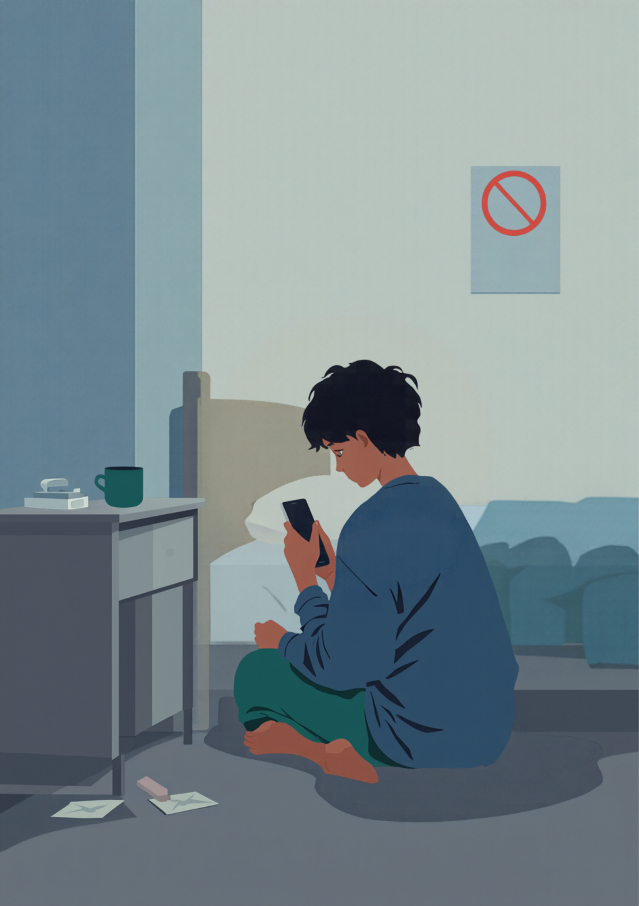
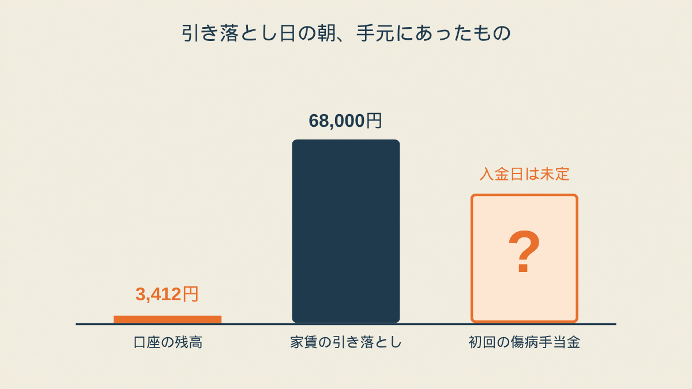
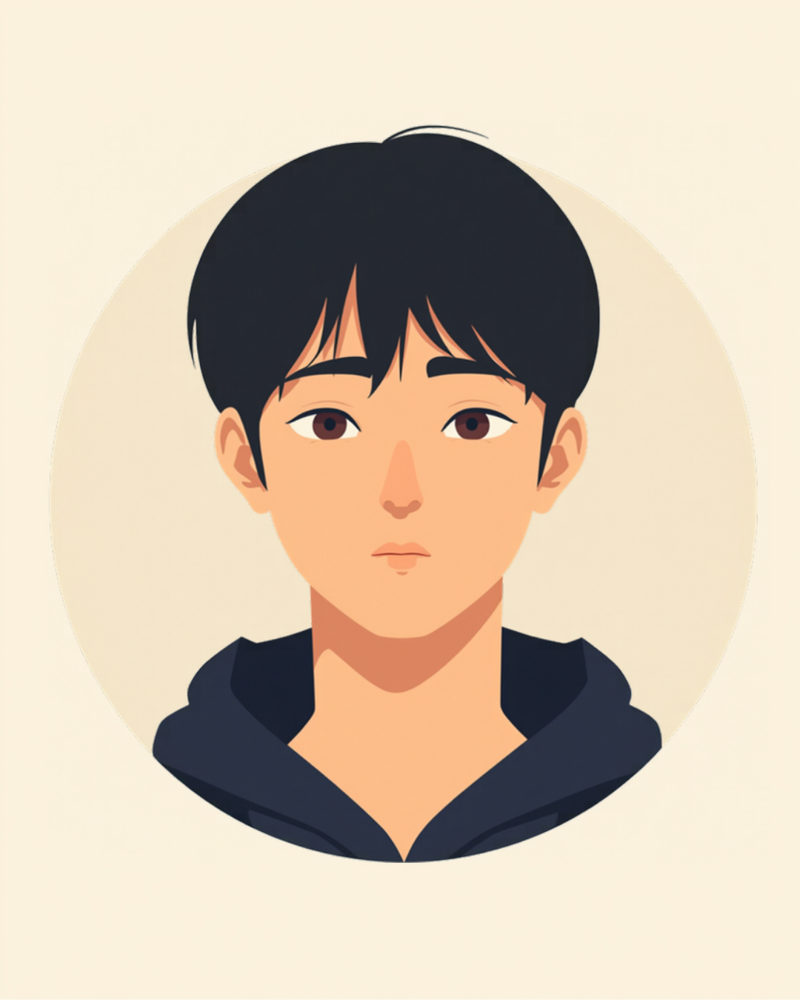
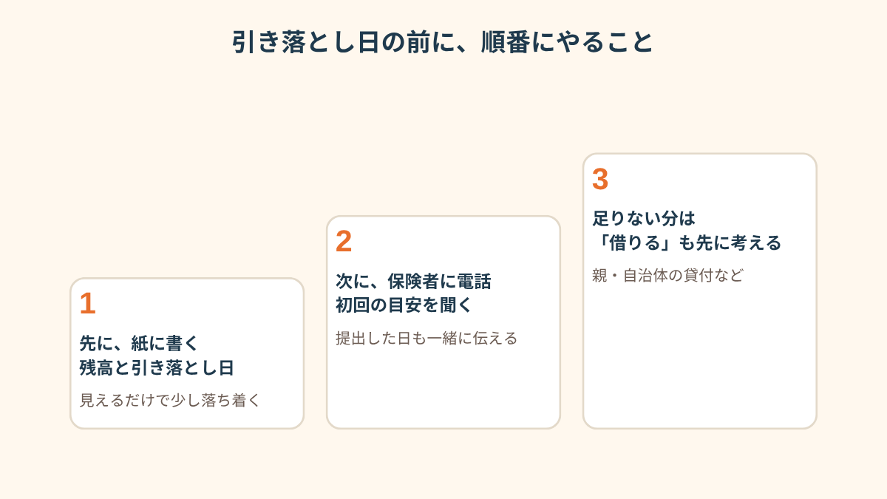

家賃の引き落としは、明日の朝。
傷病手当金は、まだ入っていなかった。

家賃の引き落とし前夜、アプリを開いたら3,412円
新卒1年目の11月から休職して、一人暮らしのまま2ヶ月がたっていました。
手当金の書類は、12月の初めに人事の人に渡してあります。
そのとき言われたのが、「だいたい1ヶ月くらいで入るはずだから」。
1ヶ月で入るんだ、と思った。
だから12月は、そんなに焦ってなかったんです。
給料は休んだ分だけ減って、ほとんどゼロになってたけど、「どうせ来月には」って。
年が明けて、まだ入らない。
1月の下旬になって、まだ入らない。
そして、家賃の引き落とし日の前の晩に銀行アプリを開いたら、残高が3,412円でした。
家賃は6万8千円。
足りないというより、桁が違う。
画面を閉じて、5分後にまた開いた。同じだった。
ちなみに、このころ健康保険組合から、書類の確認の電話が一度だけ来ていました。
「確認します」としか言われなかったのに、私はそれを「もうすぐ入るサイン」だと思い込んで、通話が終わってから1時間くらい、「傷病手当金 確認の電話 そのあと」を検索し続けた。

母へのLINEを、打っては消した
実家は電車で2時間。
お金を貸してほしい、と言えば、たぶん貸してくれる人です。
それは分かってた。分かってたのに、打てない。
「ちょっと今月」まで打って、消す。
「休職してるのにごめん、」で始めて、消す。
就職して1年もたってないのに、って、その一文が頭から出ていかなかった。
結局、夜の11時にスマホを伏せました。
朝になったら何か変わってるかも、って、変わらないのは分かってるのに。
「財布の小銭を数えてる自分がほんとに情けなくて。病院の帰りに自販機の前で、缶コーヒーを120円にするか150円にするか、たぶん5分くらい悩んでました。5分ですよ。休職してる間、いちばん自分が小さく感じたのはあの時間です」
単発バイトを4時間やって、帰り道で青くなった
引き落としの1週間前、私は一度だけ、スマホのアプリで見つけた倉庫の仕分けの単発バイトに行っています。
4時間、日給にして5千円ちょっと。
体はきつかったけど、働いてお金が入る、というだけで、ちょっと救われた気がしてた。
その帰りの電車でした。
ふと「休職中 バイト」と検索したら、いちばん上に出てきたのが「傷病手当金がもらえなくなる可能性」という文字。
手が冷たくなって、ドアの前で立ったまま動けなくなった。
その夜は、「休職中 バイト バレる」と「休職中 バイト バレない」を交互に検索して、気づいたら2時でした。
どっちのページを見ても、安心できる答えがない。
そもそも、バレるかバレないかの話をしてる時点で、自分が何かやらかした側の人間になった気がして、それがいちばんきつかった。

電話したのは、引き落とし日の朝だった
朝になって、ようやく、健保に電話しました。
何て言えばいいか分からなくて、メモ帳に書いた。
「書類を出した日は12月の初め」「初回はいつごろか」「単発のバイトを4時間やった」。
最後の1行は、書いては消して、また書いた。
電話に出た人は、思ったより淡々としていました。
怒られはしなかった。
初回の目安は、「提出から1ヶ月前後のことが多いですが、書類の状況によります」と言われて、バイトのことは、「状況を確認して、あらためてご連絡します」。
その場で白黒はつかなかったです。
それでも、電話を切ったあと、肩の力がちょっとだけ抜けた。
あとで分かったことですが、会社が記入する欄の確認に時間がかかって、健保に書類が届いたのは12月の終わりでした。
私が勝手に「1ヶ月たったのに」と焦っていた、その1ヶ月の起点が、そもそもずれていた。
その足で、母に電話しました。
LINEじゃなく、声のほうが早かった。
「7万円だけ、貸してほしい」って言ったら、「全然いいよ、なんでもっと早く言わないの」と、あっさり。
電話を切って、トイレで少し泣きました。
「初回が入ったのは、休職してから3ヶ月目でした。通知を見ても、うれしいより先に『あ、終わった』って、力が抜けて。次の分もそのくらい遅れるのかなって思ったら、結局また残高アプリを開いてましたけど」
入金のお知らせが来たのは、2月の頭でした。
母に7万円を返して、「ありがとう」と送ったら、スタンプだけ返ってきた。
アプリの残高は、もう、毎日は見なくなりました。

この記事に、聞いてみたいことはありますか？
「自分の場合はどうなんだろう」と思ったことを、気軽に書いてみてください。いただいた質問は個別にお返事したうえで、匿名で記事にすることがあります。